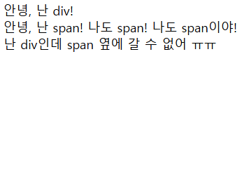
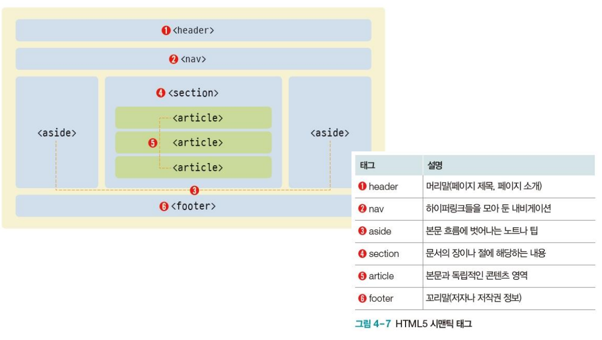
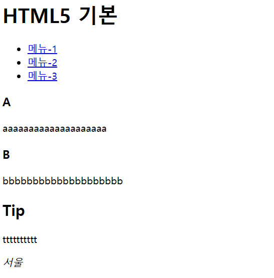

html의 요소의 구조에는 블록(block) 형식과 인라인(inline) 형식이라는 것이 있다.
블록 요소는 한 줄을 전부 차지해서 옆에 다른 요소가 놓일 수 없다.
인라인 요소는 자신의 글자 크기만큼만 영역을 차지한다. 그리고 왼쪽에서 오른쪽으로 쌓인다.
div와 span이라는 공간 분할 태그를 알아보자.
div는 블록 형식으로 공간을 분할하고 span은 인라인 형식으로 공간을 분할한다.
<!--공간 분할 태그-->
<!DOCTYPE html>
<html>
<head>
<title>div와 span</title>
</head>
<body>
<div>
안녕, 난 div!
</div>
<span>안녕, 난 span!</span>
<span>나도 span!</span>
<span>나도 span이야!</span>
<div>난 div인데 span 옆에 갈 수 없어 ㅠㅠ</div>
</body>
</html>

시맨틱 태그는 특정 태그에 의미를 부여한다. 문서를 구조화할 때 사용한다.

태그 종류와 구조는 위 그림과 같다.
아래 예시를 살펴보자.
<!--시맨틱 태그-->
<!DOCTYPE html>
<html>
<head>
<title>시맨틱</title>
</head>
<body>
<!--시맨틱 태그-->
<header>
<h1>HTML5 기본</h1>
</header>
<nav>
<ul>
<li><a href="#">메뉴-1</a></li>
<li><a href="#">메뉴-2</a></li>
<li><a href="#">메뉴-3</a></li>
</ul>
</nav>
<section>
<article>
<h1>A</h1>
<p>aaaaaaaaaaaaaaaaaaaa</p>
</article>
<article>
<h1>B</h1>
<p>bbbbbbbbbbbbbbbbbbbb</p>
</article>
</section>
<aside>
<h1>Tip</h1>
<p>tttttttttt</p>
</aside>
<footer>
<address>서울</address>
</footer>
</body>
</html>

위와 같이 시멘틱 태그를 넣으면 알아보기 쉽고 AI도 더 잘 알아본다.